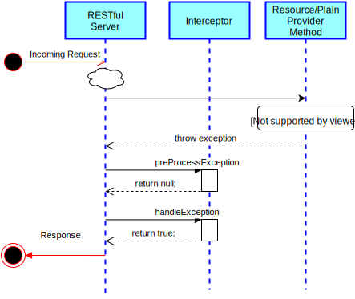

Server Interceptors
The RESTful server provides a powerful mechanism for adding cross-cutting behaviour (e.g. requests, such as authnorization, auditing, fancy output, logging, etc.) to each incoming request that it processes. This mechanism consists of defining one or more interceptors that will be invoked at defined points in the processing of each incoming request.

Interceptors will intercept the incoming request, and can take action such as logging or auditing it, or examining/injecting headers. They can optionally choose to handle the request directly and the cancel any subsequent processing (in other words, the interceptor can choose to supply a response to the client, and can then signal to the server that it does not need to do so).
Interceptors may also be notified of responses prior to those responses being served to a client, and may audit or even cancel the response. The diagram on the right shows the lifecycle of a normal (non failing) request which is subject to an interceptor.
Interceptors must implement the IServerInterceptor interface (or extend the convenience InterceptorAdapter class provided). The RESTful server will normally invoke the interceptor at several points in the execution of the client request.
- Before any processing at all is performed on the request, incomingRequestPreProcessed will be invoked. This can be useful if you wish to handle some requests completely outside of HAPI's processing mechanism.
- If this method returns true, processing continues to the next interceptor, and ultimately to the next phase of processing.
- If this method returns false, processing stops immediately. This is useful if the interceptor wishes to supply its own response by directly calling methods on the HttpServletResponse
- If this method throws any subclass of BaseServerResponseException, processing is stopped immedicately and the corresponding status is returned to the client. This is useful if an interceptor wishes to abort the request (e.g. because it did not detect valid credentials)
- Once the request is classified (meaning that the URL and request headers are examined to determine exactly what kind of request is being made), incomingRequestPostProcessed will be invoked. This method has an additional parameter, the RequestDetails object which contains details about what operation is about to be called, and what request parameters were receievd with that request.
- If this method returns true, processing continues to the next interceptor, and ultimately to the next phase of processing.
- If this method returns false, processing stops immediately. This is useful if the interceptor wishes to supply its own response by directly calling methods on the HttpServletResponse
- If this method throws any subclass of BaseServerResponseException, processing is stopped immedicately and the corresponding status is returned to the client. This is useful if an interceptor wishes to abort the request (e.g. because it did not detect valid credentials)
- Once the request is being handled, incomingRequestPreHandled will be invoked. This method is useful in that it provides details about the FHIR operation being invoked (e.g. is this a "read" or a "create"? what is the resource type and ID of the resource being accessed, etc.). This method can be useful for adding finer grained access controls. Note that incomingRequestPreHandled is not able to directly supply a response, but it may throw a BaseServerResponseException to abort processing.
- After the operation is handled (by invoking the corresponding ResourceProvider or PlainProvider method), but before the actual response is returned to the client, the outgoingResponse method is invoked. This method also has details about the request in its parameters, but also receives a copy of the response that is about to be returned. Note that there are three implementations of outgoingResponse: The server will invoke the one which corresponds to the response type of the operation being invoked (resource, bundle, etc.)
Exception Handling
In the event of an exception being thrown within the server, the interceptor method handleException will be called. This applies both to HAPI-FHIR defined exceptions thrown within resource provider methods you have created as well as unexpected exceptions such as NullPointerException thrown at any point in the handling chain.
In general, you will want to return true from the handleException method, which means that processing continues normally (RestfulServer will return an HTTP 4xx or 5xx response automatically depending on the specific exception which was thrown).
However, you may override the server's built-in exception handling by returning false. In this case, you must provide your own response by interacting with the HttpServletResponse object which is passed in.
Registering Interceptors
To register an interceptor to the server, simply call either registerInterceptor or setInterceptors on your RestfulServer instance.
Note that order is important: The server will invoke incomingRequestPreProcessed and incomingRequestPostProcessed in the same order that they are registered to the server. The server will invoke outgoingResponse in the reverse order to the order in which the interceptors were registered. This means that interceptors can be thought of as "wrapping" the request.
Built In Interceptors
HAPI also provides built-in interceptors which may be useful. Links to the code for each interceptor is also provided, to give examples of how interceptors are written.
Logging Server Requests
The LoggingInterceptor (code) can be used to generate a new log line (via SLF4j) for each incoming request. LoggingInterceptor provides a flexible message format that can be used to provide a customized level of detail about each incoming request.
The following example shows how to register a logging interceptor within a FHIR RESTful server.
@WebServlet(urlPatterns = { "/fhir/*" }, displayName = "FHIR Server")
public class RestfulServerWithLogging extends RestfulServer {
@Override
protected void initialize() throws ServletException {
// ... define your resource providers here ...
// Now register the logging interceptor
LoggingInterceptor loggingInterceptor = new LoggingInterceptor();
registerInterceptor(loggingInterceptor);
// The SLF4j logger "test.accesslog" will receive the logging events
loggingInterceptor.setLoggerName("test.accesslog");
// This is the format for each line. A number of substitution variables may
// be used here. See the JavaDoc for LoggingInterceptor for information on
// what is available.
loggingInterceptor.setMessageFormat("Source[${remoteAddr}] Operation[${operationType} ${idOrResourceName}] UA[${requestHeader.user-agent}] Params[${requestParameters}]");
}
}
This interceptor will then produce output similar to the following:
2014-09-04 02:37:30.030 Source[127.0.0.1] Operation[vread Patient/1667/_history/1] UA[Mozilla/5.0 (Macintosh; Intel Mac OS X 10_9_4) AppleWebKit/537.36 (KHTML, like Gecko) Chrome/37.0.2062.94 Safari/537.36] Params[?_format=json] 2014-09-04 03:30:00.443 Source[127.0.0.1] Operation[search-type Organization] UA[Mozilla/4.0 (compatible; MSIE 7.0; Windows NT 5.1)] Params[]
Exception Handling
The ExceptionHandlingInterceptor (code) can be used to customize what is returned to the client and what is logged when the server throws an exception for any reason (including routine things like UnprocessableEntityExceptions thrown as a matter of normal processing in a create method, but also including unexpected NullPointerExceptions thrown by client code).
The following example shows how to register an exception handling interceptor within a FHIR RESTful server.
@WebServlet(urlPatterns = { "/fhir/*" }, displayName = "FHIR Server")
public class RestfulServerWithExceptionHandling extends RestfulServer {
@Override
protected void initialize() throws ServletException {
// ... define your resource providers here ...
// Now register the interceptor
ExceptionHandlingInterceptor interceptor = new ExceptionHandlingInterceptor();
registerInterceptor(interceptor);
// Return the stack trace to the client for the following exception types
interceptor.setReturnStackTracesForExceptionTypes(InternalErrorException.class, NullPointerException.class);
}
}
Response Syntax Highlighting
The ResponseHighlighterInterceptor (code) detects when a request is coming from a browser and returns HTML with syntax highlighted XML/JSON instead of just the raw text. In other words, if a user uses a browser to request "http://foo/Patient/1" by typing this address into their URL bar, they will get nice formatted HTML back with a human readable version of the content. This is helpful for testers.
To see an example of how this looks, see our demo server using the following example query: http://fhirtest.uhn.ca/baseDstu2/Patient
The following example shows how to register this interceptor within a FHIR RESTful server.
@WebServlet(urlPatterns = { "/fhir/*" }, displayName = "FHIR Server")
public class RestfulServerWithResponseHighlighter extends RestfulServer {
@Override
protected void initialize() throws ServletException {
// ... define your resource providers here ...
// Now register the interceptor
ResponseHighlighterInterceptor interceptor = new ResponseHighlighterInterceptor();
registerInterceptor(interceptor);
}
}
Request/Response Validation
The RequestValidatingInterceptor and ResponseValidatingInterceptor can be used to perform validation of resources on their way into and out of the server respectively.
The RequestValidatingInterceptor looks at resources coming into the server (e.g. for create, update, $operations, transactions, etc.) and validates them. The ResponseValidatingInterceptor looks at resources being returned by the server (e.g. for read, search, $operations, etc.) and validates them.
These interceptors can be configured to add headers to the response, fail the response (returning an HTTP 422 and throwing an exception in the process), or to add to the OperationOutcome returned by the server.
See the Validation Page for information on available IValidatorModule validation modules. Any of the Resource Validators listed on that page can be enabled in these interceptors (note that the Parser Validators can not).
The following example shows how to register this interceptor within a FHIR RESTful server.
@WebServlet(urlPatterns = { "/fhir/*" }, displayName = "FHIR Server")
public class ValidatingServerWithLogging extends RestfulServer {
@Override
protected void initialize() throws ServletException {
// ... define your resource providers here ...
// Create an interceptor to validate incoming requests
RequestValidatingInterceptor requestInterceptor = new RequestValidatingInterceptor();
// Register a validator module (you could also use SchemaBaseValidator and/or SchematronBaseValidator)
requestInterceptor.addValidatorModule(new FhirInstanceValidator());
requestInterceptor.setFailOnSeverity(ResultSeverityEnum.ERROR);
requestInterceptor.setAddResponseHeaderOnSeverity(ResultSeverityEnum.INFORMATION);
requestInterceptor.setResponseHeaderValue("Validation on ${line}: ${message} ${severity}");
requestInterceptor.setResponseHeaderValueNoIssues("No issues detected");
// Now register the validating interceptor
registerInterceptor(requestInterceptor);
// Create an interceptor to validate responses
// This is configured in the same way as above
ResponseValidatingInterceptor responseInterceptor = new ResponseValidatingInterceptor();
responseInterceptor.addValidatorModule(new FhirInstanceValidator());
responseInterceptor.setFailOnSeverity(ResultSeverityEnum.ERROR);
responseInterceptor.setAddResponseHeaderOnSeverity(ResultSeverityEnum.INFORMATION);
responseInterceptor.setResponseHeaderValue("Validation on ${line}: ${message} ${severity}");
responseInterceptor.setResponseHeaderValueNoIssues("No issues detected");
registerInterceptor(responseInterceptor);
}
}
CORS (Cross-Origin Resource Sharing)
HAPI FHIR includes an interceptor which can be used to implement CORS support on your server. See HAPI's CORS Documentation for information on how to use this interceptor.
Rejecting Unsupported HTTP Verbs
Some security audit tools require that servers return an HTTP 405 if an unsupported HTTP verb is received (e.g. TRACE). The BanUnsupprtedHttpMethodsInterceptor (code) can be used to accomplish this.
Creating Interceptors
Creating your own interceptors is easy. HAPI-FHIR provides a class called InterceptorAdapter which you can extend and then override any methods you wish. The following example shows a simple request counter.
public class RequestCounterInterceptor extends InterceptorAdapter
{
private int myRequestCount;
public int getRequestCount() {
return myRequestCount;
}
/**
* Override the incomingRequestPreProcessed method, which is called
* for each incoming request before any processing is done
*/
@Override
public boolean incomingRequestPreProcessed(HttpServletRequest theRequest, HttpServletResponse theResponse) {
myRequestCount++;
return true;
}
}
The following example shows an exception handling interceptor which overrides the built-in exception handling by providing a custom response.
public class RequestExceptionInterceptor extends InterceptorAdapter
{
@Override
public boolean handleException(RequestDetails theRequestDetails, BaseServerResponseException theException, HttpServletRequest theServletRequest,
HttpServletResponse theServletResponse) throws ServletException, IOException {
// HAPI's server exceptions know what the appropriate HTTP status code is
theServletResponse.setStatus(theException.getStatusCode());
// Provide a response ourself
theServletResponse.setContentType("text/plain");
theServletResponse.getWriter().append("Failed to process!");
theServletResponse.getWriter().close();
// Since we handled this response in the interceptor, we must return false
// to stop processing immediately
return false;
}
}
JPA Server Interceptors
The HAPI JPA Server is an added layer on top of the HAPI REST server framework. When you
When an interceptor is registered against a RestfulServer which is backed by the HAPI JPA Server, the incomingRequestPreHandled method will be called once for most operations (e.g. a FHIR create), but in the case where the client performs a FHIR transaction that method might be called multiple times over the course of a single client invocation. For example if the transaction contained a single create, the incomingRequestPreHandled method will be called twice: once to indicate the transaction, and once to indicate the create.
This behaviour can be useful in cases where you want to audit exactly what was done over the course of a request. Since a transaction can contain creates, updates, and even more nested transactions, this behaviour ensures that you are notified for each activity.
You may also choose to create interceptors which implement the more specialized IJpaServerInterceptor interface, as this interceptor adds additional methods which are called during the JPA lifecycle.
Note that this documentation used to erroneously suggest that in order to achieve this behaviour you needed to register the interceptor with the DaoConfig. In actual fact this did not make any difference, and registering interceptors with the DaoConfig has now been deprecated since it does not achieve anything extra.